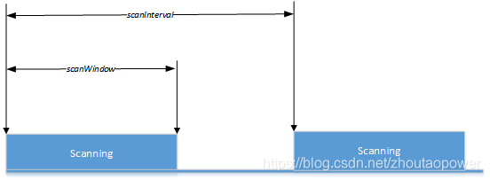
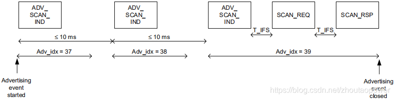

17. Zephyr - BLE 扫描
17.1. 扫描数据
协议栈提供的扫描数据有两类：数据包的相关信息，广播数据。
bt_le_scan_recv_info
bt_le_scan_recv_info 结构体描述了收到数据包的相关信息。
struct bt_le_scan_recv_info {
/**
* @brief Advertiser LE address and type.
*
* If advertiser is anonymous then this address will be
* @ref BT_ADDR_LE_ANY.
*/
const bt_addr_le_t *addr;
/** Advertising Set Identifier. */
uint8_t sid;
/** Strength of advertiser signal. */
int8_t rssi;
/** Transmit power of the advertiser. */
int8_t tx_power;
/** Advertising packet type. */
uint8_t adv_type;
/** Advertising packet properties. */
uint16_t adv_props;
/**
* @brief Periodic advertising interval.
*
* If 0 there is no periodic advertising.
*/
uint16_t interval;
/** Primary advertising channel PHY. */
uint8_t primary_phy;
/** Secondary advertising channel PHY. */
uint8_t secondary_phy;
};
addr：广播者的链路地址。
sid：不同的广播事件（扩展广播里使用）。
rssi：广播信号的强度。
tx_power：广播者的传输能力（物理层相关）。
adv_type：广播包类型。
/** Scannable and connectable advertising. */
BT_GAP_ADV_TYPE_ADV_IND = 0x00,
/** Directed connectable advertising. */
BT_GAP_ADV_TYPE_ADV_DIRECT_IND = 0x01,
/** Non-connectable and scannable advertising. */
BT_GAP_ADV_TYPE_ADV_SCAN_IND = 0x02,
/** Non-connectable and non-scannable advertising. */
BT_GAP_ADV_TYPE_ADV_NONCONN_IND = 0x03,
/** Additional advertising data requested by an active scanner. */
BT_GAP_ADV_TYPE_SCAN_RSP = 0x04,
adv_props：广播包属性。
/** Connectable advertising. */
BT_GAP_ADV_PROP_CONNECTABLE = BIT(0),
/** Scannable advertising. */
BT_GAP_ADV_PROP_SCANNABLE = BIT(1),
/** Directed advertising. */
BT_GAP_ADV_PROP_DIRECTED = BIT(2),
/** Additional advertising data requested by an active scanner. */
BT_GAP_ADV_PROP_SCAN_RESPONSE = BIT(3),
interval 与周期性广播相关，此处不介绍；primary_phy 和 secondary_phy 与扩展广播相关，此处也不介绍。
net_buf_simple
net_buf_simple 是收到的广播数据。这个结构体是 Zephyr 定义的，我们不用自己解析内容，BLE 协议栈提供了 bt_data_parse 函数来辅助解析。
void bt_data_parse(struct net_buf_simple *ad,
bool (*func)(struct bt_data *data, void *user_data),
void *user_data);
参数：
ad：net_buf_simple类型数据的指针，也就是我们收到的广播数据缓冲区的指针。func：回调函数，每次解析出一个完整的数据单元（AD Structure）就会回调func函数，传入bt_data类型数据的指针和user_data。user_data：用户数据。
该函数是同步的，解析完所有的数据才返回。
17.2. 扫描参数
概念理解
BLE 扫描是一个周期性的行为。设备每一个周期（scanInterval）进行一次扫描业务，在这个周期里，设备也不是一直都在接收广播包，而是有一个扫描窗口（scanWindow）的时间，在这个时间内接收包。如下图所示：

Passive Scanning：这种类型的扫描只收包，不发生任何包。
Active Scanning：这种类型的扫描收到可扫描的包后，会主动发送请求包（SCAN_REQ）。如下图所示：

bt_le_scan_param
/** LE scan parameters */
struct bt_le_scan_param {
/** Scan type (BT_LE_SCAN_TYPE_ACTIVE or BT_LE_SCAN_TYPE_PASSIVE) */
uint8_t type;
union {
/** Bit-field of scanning filter options. */
uint32_t filter_dup __deprecated;
/** Bit-field of scanning options. */
uint32_t options;
};
/** Scan interval (N * 0.625 ms) */
uint16_t interval;
/** Scan window (N * 0.625 ms) */
uint16_t window;
/**
* @brief Scan timeout (N * 10 ms)
*
* Application will be notified by the scan timeout callback.
* Set zero to disable timeout.
*/
uint16_t timeout;
/**
* @brief Scan interval LE Coded PHY (N * 0.625 MS)
*
* Set zero to use same as LE 1M PHY scan interval.
*/
uint16_t interval_coded;
/**
* @brief Scan window LE Coded PHY (N * 0.625 MS)
*
* Set zero to use same as LE 1M PHY scan window.
*/
uint16_t window_coded;
};
bt_le_scan_param 结构体就是协议栈的扫描参数。常用的有 type，options，interval，window 和 timeout；后面两个 interval_coded 和 window_coded 是与协议栈物理层相关的参数，一般用不到。
type：指明了扫描是 Active 还是 Passive 的。interval：扫描间隔。window：扫描窗口。timeout：超时时间。（扩展扫描使用）options：扫描选项。这里列举一些常用的选项
BT_LE_SCAN_OPT_NONE：不使用扫描选项。
BT_LE_SCAN_OPT_FILTER_DUPLICATE：失能重复过滤策略，这样能够实时收到同一设备更新的广播包。
BT_LE_SCAN_OPT_FILTER_WHITELIST：使用白名单过滤策略，这样物理层只接收白名单里存储的设备地址发来的广播。
BT_LE_SCAN_OPT_CODED：是否在 coded PHY 上进行扫描，开启后扫描距离会更远，但是速率会降低。
当然，协议栈为了方便我们使用，也提供了一系列的参数宏来辅助构造扫描参数。
BT_LE_SCAN_PARAM_INIT
#define BT_LE_SCAN_PARAM_INIT(_type, _options, _interval, _window) \
{ \
.type = (_type), \
.options = (_options), \
.interval = (_interval), \
.window = (_window), \
.timeout = 0, \
.interval_coded = 0, \
.window_coded = 0, \
}
该参数宏使用 type, options, interval 和 window 快速初始化了一个扫描参数，不常用的部分默认为 0 。
BT_LE_SCAN_PARAM
#define BT_LE_SCAN_PARAM(_type, _options, _interval, _window) \
((struct bt_le_scan_param[]) { \
BT_LE_SCAN_PARAM_INIT(_type, _options, _interval, _window) \
})
为了更加方便使用，BT_LE_SCAN_PARAM 宏直接构造了只有一个 bt_le_scan_param 元素的数组，并且展开后是该数组的首地址，也就是该元素的地址。
协议栈还利用 BT_LE_SCAN_PARAM 构造了一些常用的宏供我们使用：
/* Active 扫描 */
#define BT_LE_SCAN_ACTIVE BT_LE_SCAN_PARAM(BT_LE_SCAN_TYPE_ACTIVE, \
BT_LE_SCAN_OPT_FILTER_DUPLICATE, \
BT_GAP_SCAN_FAST_INTERVAL, \
BT_GAP_SCAN_FAST_WINDOW)
/* Pasive 扫描 */
#define BT_LE_SCAN_PASSIVE BT_LE_SCAN_PARAM(BT_LE_SCAN_TYPE_PASSIVE, \
BT_LE_SCAN_OPT_FILTER_DUPLICATE, \
BT_GAP_SCAN_FAST_INTERVAL, \
BT_GAP_SCAN_FAST_WINDOW)
/* 在 Coded PHY Active 扫描 */
#define BT_LE_SCAN_CODED_ACTIVE \
BT_LE_SCAN_PARAM(BT_LE_SCAN_TYPE_ACTIVE, \
BT_LE_SCAN_OPT_CODED | \
BT_LE_SCAN_OPT_FILTER_DUPLICATE, \
BT_GAP_SCAN_FAST_INTERVAL, \
BT_GAP_SCAN_FAST_WINDOW)
/* 在 Coded PHY Pasive 扫描 */
#define BT_LE_SCAN_CODED_PASSIVE \
BT_LE_SCAN_PARAM(BT_LE_SCAN_TYPE_PASSIVE, \
BT_LE_SCAN_OPT_CODED | \
BT_LE_SCAN_OPT_FILTER_DUPLICATE, \
BT_GAP_SCAN_FAST_INTERVAL, \
BT_GAP_SCAN_FAST_WINDOW)
17.3. 控制扫描
bt_le_scan_cb_register
struct bt_le_scan_cb {
/**
* @brief Advertisement packet received callback.
*
* @param info Advertiser packet information.
* @param buf Buffer containing advertiser data.
*/
void (*recv)(const struct bt_le_scan_recv_info *info,
struct net_buf_simple *buf);
/** @brief The scanner has stopped scanning after scan timeout. */
void (*timeout)(void);
sys_snode_t node;
};
void bt_le_scan_cb_register(struct bt_le_scan_cb *cb);
bt_le_scan_cb_register 用于注册一个全局的扫描回调结构体。
参数：
cb，bt_le_scan_cb结构体类型的指针，其指向的结构体必须保持有效，最好是静态变量。
bt_le_scan_cb 结构体包含了
recv函数，每次收到广播包后就会回调该函数。timeout函数，如果开启扫描时提供了扫描超时时间，那么协议栈停止扫描时会回调该函数。node是一个链表节点，这意味着可以多次调用bt_le_scan_cb_register来注册多个结构体，提高了编程的灵活性。
bt_le_scan_cb_unregister
void bt_le_scan_cb_unregister(struct bt_le_scan_cb *cb);
bt_le_scan_cb_unregister 用于取消注册一个扫描回调结构体。
参数：
cb，bt_le_scan_cb结构体类型的指针，其指向的结构体必须保持有效，最好是静态变量。
17.4. 开启扫描
typedef void bt_le_scan_cb_t(const bt_addr_le_t *addr, int8_t rssi,
uint8_t adv_type, struct net_buf_simple *buf);
int bt_le_scan_start(const struct bt_le_scan_param *param, bt_le_scan_cb_t cb);
bt_le_scan_start 用于开启扫描。
参数：
params：扫描参数。cb：扫描回调函数，协议栈收到广播数据后会回调该函数。与使用bt_le_scan_cb_register注册的回调结构体不同，cb只针对本次扫描有效，而前者针对所有的扫描都有效。cb可以为 NULL 。
返回值：
0 表示成功，其他值表示失败。
17.5. 停止扫描
int bt_le_scan_stop(void);
bt_le_scan_stop 用于手动停止扫描，前面还介绍了使用 timeout 协议栈会自动停止扫描。
返回值：
0 表示成功，其他值表示失败。
17.6. 内核配置
想要使用 Zephyr Bluetooth 协议栈的扫描功能，需要配置内核，在 prj.conf 文件里添加下述内容即可，或者通过 west build -t guiconfig 方法配置。
CONFIG_BT_OBSERVER=y
参考：